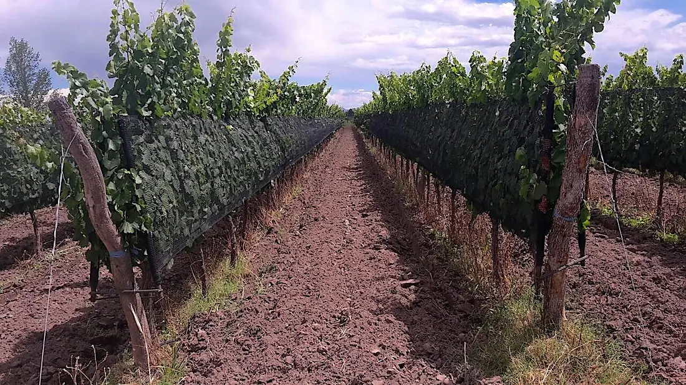
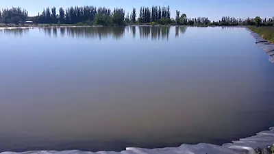
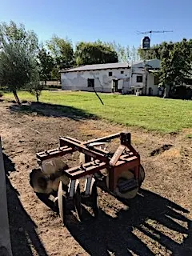
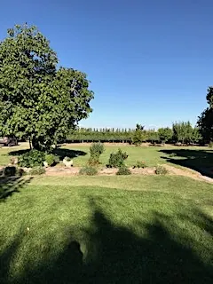
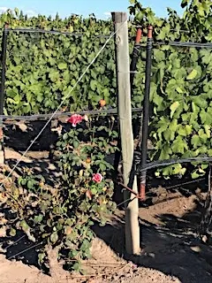
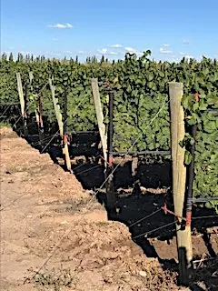
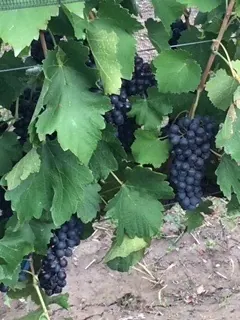

Las Paredes, San Rafael
Viñedo de primer nivel — más de 40 ha (100+ acres) con 30 ha (75 acres) de uva premium
¡Los dueños invirtieron US$1,5 millones!
Esta propiedad ya se vendió. Queda acá como registro de qué se vendió y a qué precio. Consulte a Byron por algo parecido.

Este es un negocio vitícola en marcha, con 3 propiedades separadas en la zona de Las Paredes, San Rafael. Hay un total de más de 100 acres (más de 40 hectáreas), con 75 acres (30 hectáreas) de vid de alta calidad en plena producción (50% malbec, más sauvignon blanc, cabernet sauvignon, pinot noir, cabernet franc, syrah y algo de torrontés).
Hay además más de diez acres disponibles para implantar, junto con unos 15 acres que contienen dos casas de personal en propiedades distintas, galpones de maquinaria e insumos, construcciones auxiliares, caminos internos, olivos y frutales.
La propiedad incluye una represa de 2,5 acres con sistema de riego por goteo para 55 acres.

La producción ronda los 230.000 a 290.000 kilos de uva vendidos cada año a distintas bodegas.
Toda la vid está bajo malla antigranizo.
En los últimos años la bodega Bianchi —una de las principales de la Argentina— contrató la compra de una cantidad importante de la cosecha. Bianchi es muy selectiva al comprar uva y normalmente adquiere solo la de mayor calidad de la región.

Hay además unos 150 olivos en las propiedades. Más de 100 tienen 8 años y están en producción, aunque fueron muy castigados por el granizo hace cuatro años y están en recuperación.
El precio incluye un tractor, una moto y varios implementos y herramientas, junto con todos los insumos actuales.
Los dueños están dispuestos a vender tras más de 10 años de desarrollar las propiedades y con más de US$1.500.000 invertidos, por motivos de salud y por la edad avanzada de algunos de los socios. Podrían estar dispuestos a vender las propiedades por separado en lugar de todas juntas.

(LEA MÁS DETALLES DE LOS DUEÑOS DEBAJO DE LAS FOTOS)
MÁS DETALLES DE LAS TRES FINCAS, EN PALABRAS DE LOS DUEÑOS
"Es una parcela de 6 hectáreas (14,8 acres) ubicada en Calle Jensen, San Rafael, a poca distancia de la ruta principal, el aeropuerto y la bodega Bianchi (coordenadas de Google Maps -34.602871, -68.414740). Está enfrente de los viñedos de Mumm, en una zona muy linda de viñedos y casas.

"La Ángela tiene alrededor de la mitad de la superficie con uva Syrah y la otra mitad con Malbec. Estas plantas fueron implantadas originalmente por un directivo de Mumm como viñedo personal. La tenemos hace 11 años. Las plantas tienen 18 años y son de alta calidad. La propiedad se riega por manto desde un canal que corre por el frente, sobre Calle Jensen. Mejoramos el sistema de riego con los años. La propiedad tiene derechos de agua de canal asignados, suficientes para las 6 hectáreas de vid.
"El resto del terreno tiene una casa de personal y un sector de depósito en una construcción de una sola planta, con cochera separada y tanque de agua, además de un horno de pan y elementos varios. Este sector tiene una variedad de frutales y nogales que se cosechan todos los años, y también una huerta. Toda la propiedad está alambrada y muy bien mantenida.
"Todos los años vendemos sin dificultad el Malbec de alta calidad de esta propiedad, mayormente a la bodega Bianchi. El Syrah está algo fuera de moda en este momento y se usa sobre todo para cortes, así que cuando no logramos vender la uva solemos elaborarla como mosto en la bodega Giaroli y vender ese mosto a bodegas a precio de mercado más adelante en el año."

"Es una propiedad de 30 hectáreas (74,13 acres) que originalmente era campo de pastura y que desarrollamos e implantamos en los últimos 12 años. Está ubicada en la zona de Las Paredes, al norte de la ciudad, a unos 20 minutos del centro (coordenadas de Google Maps -34.535589, -68.378554). Como puede verse, está en una zona con bastantes viñedos y montes frutales, aunque la imagen de Google parece bastante vieja.
"Con los años implantamos una variedad de uvas, con alrededor de 50% de Malbec y superficies menores de Pinot Noir, Sauvignon Blanc, Cabernet Sauvignon, Cabernet Franc y Torrontés. Las plantas más viejas tienen 12 años (Malbec) y las más jóvenes (6 años) son Torrontés y Cabernet Franc. Todas están en plena producción. De las 30 hectáreas, alrededor del 75% es viñedo, y el resto son caminos internos, represa y olivos.
"Le sumamos a esta propiedad una represa de 1 hectárea y un sistema de goteo. Hay dos bombas italianas en funcionamiento para ese sistema, alojadas en una construcción separada junto a la represa, con una línea eléctrica dedicada. Hicimos una acequia desde el canal hasta la represa, que almacena alrededor de 2 semanas de agua. La propiedad tiene derechos de agua de canal asignados para las 30 hectáreas completas.

"La propiedad tiene además alrededor de 80 olivos en producción de unos 12 años, y otros 50 aproximadamente plantados hace unos 3 años, todavía lejos de producir.
"La uva de esta propiedad se considera de buena calidad, aunque no tanto como la de La Ángela. No tenemos problema en vender la mayor parte de la uva cada año, sobre todo a Bianchi y Mumm, si bien a veces debemos elaborar algo como mosto en la bodega Giaroli, según las necesidades de las bodegas. Nunca tuvimos problemas para vender el mosto."
"Es una propiedad de 5 hectáreas (12,3 acres) ubicada a solo una propiedad al este de La Paca (coordenadas de Google Maps -34.529392, -68.375445). Tiene alrededor de 4 hectáreas de tierra nivelada pero sin implantar, y el resto está ocupado por una construcción grande y su playa de estacionamiento. Ese edificio de una planta contiene un departamento para personal, una cochera para tractores, una oficina de la empresa y varios depósitos de herramientas e insumos que se usan en La Paca."
"Además de las 3 propiedades, tenemos un tractor usado, un ciclomotor y una variedad de herramientas e insumos que se incluirían en la venta. Según la época del año, también tenemos vino en tanques en Giaroli que podría incluirse en la venta si no se vendió antes. Nuestro encargado y nuestros 3 empleados de tiempo completo estarían dispuestos a continuar con quien compre las propiedades."
Malbec - 99.808 kg (2021) - 106.632 kg (2022) Pinot Noir - 27.460 kg (2021) - 38.720 kg (2022) Sauvignon Blanc - 42.880 kg (2021) - 56.004 kg (2022) Cabernet Sauvignon - 3.670 kg (2021) - 2.970 kg (2022) Cabernet Franc - 15.871 kg (2021) - 26.700 kg (2022) Torrontés - 30.005 kg (2021) - 35.020 kg (2022) Syrah - 23.740 kg (2021) - 24.040 kg (2022)
2018: 288.714 kilos 2019: 231.085 kilos 2020: 290.086 kilos 2021: 243.164 kilos
El resto de las fotos
9 fotos más de esta propiedad. Toque cualquiera para verla en grande.


{kind=link}
{kind=link}
{kind=link}
{kind=link}
{kind=link}
{kind=link}
{kind=link}
{kind=link}
{kind=link}
{kind=link}
{kind=link}
{kind=link}
{kind=link}
{kind=link}
{kind=link}